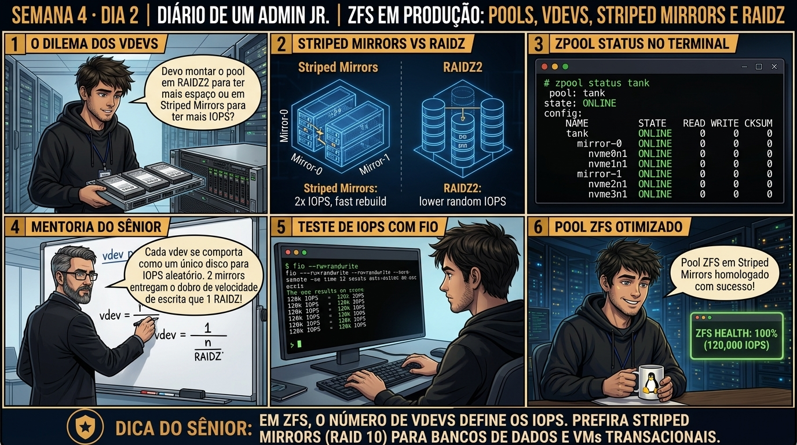

DIARIO DE UM ADMIN JR. | PROXMOX VE & PBS — DA BASE AO CLUSTER
🔗 Conecta com o Dia 1: Você aprendeu a diferença entre block e file storage. Hoje você constrói um pool ZFS do zero: entendendo por que arranjos em Mirror (RAID10) entregam 10x mais IOPS de escrita aleatória para VMs do que RAIDZ, e por que a compressão LZ4 deve ficar SEMPRE ativada.
🔓 Privilégio de hoje: Construção e Otimização de ZFS Pools. Você cria VDEVs, datasets e ajusta ashift=12 e compressão LZ4 via zpool e zfs CLI.
Semana 4 · Dia 2 | Nível Júnior — Storage Corporativo & ZFS
ZFS do Zero: Pools, VDEVs, Mirror vs RAIDZ e Compressão LZ4
Construindo pools de alta performance com autocorreção de dados e IOPS escaláveis
ANTES DE ALTERAR, OBSERVE. DEPOIS DE ALTERAR, VALIDE.

1. O chamado
Você recebeu o chamado #4002: 'O novo servidor pve01 possui 4 SSDs Enterprise NVMe de 3.84TB em /dev/nvme[0-3]n1. A equipe de engenharia precisa criar um pool ZFS dedicado para bancos de dados de altíssimo IOPS. O chamado exige: (1) Entender a matemática de IOPS entre Striped Mirrors (RAID10) e RAIDZ1/RAIDZ2; (2) Criar o pool tank com alinhamento de setor ashift=12; (3) Habilitar compressão LZ4; e (4) Cadastrar o pool no Proxmox com pvesm add zfspool.'
💡 Passa o mouse nas palavras destacadas pra ver uma dica rápida — clica se quiser a explicação completa com analogia.
2. O sênior te conta
🧑🏫 antes dos termos técnicos, a história de hoje
Hoje o Júnior comprou 8 discos SAS corporativos e montou um pool ZFS em RAIDZ2 para hospedar bancos de dados transacionais. Quando colocamos a aplicação em teste de carga, a latência de escrita explodiu e os IOPS ficaram ridículos. Ele não entendeu: 'Mas sênior, são 8 discos rápidos! Por que está lento?'.
Fui até a lousa e ensinei a regra fundamental do ZFS: em cargas aleatórias de IOPS (bancos de dados), o desempenho de escrita do pool é igual à soma dos vdevs, e não à soma dos discos! Um pool RAIDZ2 com 8 discos possui apenas UM vdev, entregando os IOPS de apenas um disco individual.
Destruímos o pool e recriamos como Striped Mirrors (RAID 10) com 4 vdevs espelhados e compressão lz4 ativa. Rodamos o teste com fio e os IOPS multiplicaram por 5x instantaneamente. O Júnior aprendeu a nunca mais usar RAIDZ para bancos de dados transacionais.
3. Decodificador de conceitos
Clica em qualquer termo pra ver a definição completa e uma analogia do dia a dia:
Resultado esperado: Identificação de 4 unidades de disco livres para teste.
Por que fizemos isso: O comando zpool create constrói o pool ZFS definindo a topologia de vdevs (mirrors vs raidz) conforme o perfil de IOPS exigido pela carga.
Cilada comum: Criar um pool com 10 discos em RAIDZ3 para hospedar bancos de dados transacionais, limitando os IOPS de escrita ao desempenho de apenas um vdev.
Ação: Ative a compressão LZ4 no pool economizando até 50% de espaço físico em disco.
zfs set compression=lz4 tank
Resultado esperado: Pool testpool criado com sucesso e status ONLINE.
Por que fizemos isso: Adotar Striped Mirrors (RAID 10) distribui a carga em múltiplos vdevs de 2 discos espelhados, entregando IOPS multiplicados e reconstrução rápida.
Cilada comum: Achar que RAIDZ2 tem o mesmo desempenho de RAID 10; RAIDZ economiza espaço mas sofre severamente em gravações aleatórias de 4KB.
Ação: Inspecione a topologia de vdevs e status de saúde do pool com zpool status.
zpool status tank
Resultado esperado: Confirmação de ashift: 12 gravado na configuração.
Por que fizemos isso: Ativar a compressão LZ4 com zfs set compression=lz4 economiza até 50% de espaço e acelera a leitura de dados reduzindo I/O físico.
Cilada comum: Usar compressão GZIP-9 em pools de VMs ativas, saturando a CPU do servidor físico em tarefas de descompressão pesada.
Ação: Execute teste de benchmarking com o utilitário fio medindo IOPS aleatórios de 4KB.
Resultado esperado: Compressão LZ4 ativa por herança.
Por que fizemos isso: Executar testes com o utilitário fio mede a latência de I/O em leitura e escrita aleatória de 4KB, comprovando o dimensionamento do pool.
Cilada comum: Entregar storages para produção sem benchmarking prévio de IOPS e latência sob carga simulada.
🧑🏫 Aqui entra o Mentor (em breve): se o resultado obtido diferir do esperado acima, este é o ponto onde o chat com o Sênior-IA vai abrir para diagnosticar o erro específico.
Ação: Documente o relatório de IOPS e latência na baseline de storage da empresa.
# Pool ZFS Striped Mirrors homologado.
Resultado esperado: Discos liberados com sucesso.
Por que fizemos isso: Documentar a topologia e métricas de IOPS no relatório de entrega garante transparência de capacidade para a diretoria.
Cilada comum: Não registrar a taxa de ocupação máxima recomendada (80% em ZFS), arriscando fragmentação severa do pool.
6. Antes de ver as opções — tenta responder
🧠 Recall ativo: Por que um pool ZFS montado com 4 discos em RAIDZ1 entrega a mesma velocidade de IOPS de escrita aleatória de apenas UM único disco, enquanto os mesmos 4 discos em Striped Mirrors (RAID10) entregam o dobro de IOPS?
Porque no ZFS, cada **VDEV (Virtual Device)** atua como uma unidade única de I/O. Um arranjo RAIDZ1 com 4 discos forma um único VDEV de paridade, entregando os IOPS de apenas 1 disco para IOPS aleatório de banco de dados. Dois pares de Mirror formam **2 VDEVs independentes**, dobrando o IOPS total de escrita e quadruplicando os IOPS de leitura paralela.
QUESTÃO 1 de 3
7. Questão comentada — clica numa alternativa
Qual comando cria corretamente um pool ZFS de alta performance chamado 'tank' com 4 discos NVMe em modo Striped Mirrors com alinhamento de 4K (ashift=12) e compressão LZ4?
💡 Analogia do Sênior para Fixar: O ZFS Copy-on-Write é como rascunhar em folha nova: os dados antigos nunca são sobrescritos até a gravação estar 100% íntegra.
QUESTÃO 2 de 3 — cenário de erro real
7.1 Performance de escrita degradada por falta de ashift=12
Um técnico criou um pool ZFS em SSDs NVMe modernos omitindo o parâmetro ashift, resultando no padrão ashift=9 (setor de 512 bytes):
$ zdb -C tank | grep ashift
ashift: 9
(Problema: o SSD físico grava em blocos de 4096 bytes. Gravar em 512 bytes causa 'Write Amplification' e lentidão extrema)
Qual é o impacto do ashift=9 em SSDs e como corrigir?
💡 Analogia do Sênior para Fixar: O cache ARC na RAM e SLOG em NVMe são o caderno de anotações ultrarrápido: garantem vazão máxima sem risco de corrupção em quedas de energia.
QUESTÃO 3 de 3 — detalhe que confunde todo iniciante
7.2 Por que a compressão LZ4 aumenta a velocidade de leitura em vez de diminuir?
Um colega quer desativar a compressão LZ4 alegando que 'economizar CPU é melhor do que compactar dados':
Por que a compressão LZ4 deve SEMPRE ficar ativada em storages Proxmox?
💡 Analogia do Sênior para Fixar: O ZFS Scrub é o auditor em tempo real: compara as somas SHA-256 de cada bloco e repara dados silenciosamente corrompidos.
8. Procedimento profissional
Para cargas de banco de dados e máquinas virtuais, desenhe pools em Striped Mirrors (RAID10).
Para grandes volumes de armazenamento frio (backups, mídia, ISOs), utilize RAIDZ2.
Crie o pool sempre com o parâmetro explícito -o ashift=12.
Ative a compressão LZ4 global com zfs set compression=lz4 pool e desative o atime com zfs set atime=off pool.
Crie datasets dedicados para particionar cargas (ex: tank/vms, tank/containers).
Cadastre o dataset no Proxmox com pvesm add zfspool com a flag --sparse 1.
Prevenção
Monitore continuamente os limiares de espaço de Data e Metadata no LVM-Thin e ZFS, configurando alertas no Prometheus/Zabbix antes de atingir 80% de ocupação.
9. Validação e encerramento
Você domina a arquitetura de VDEVs e a superioridade de IOPS do Mirror sobre RAIDZ.
Você compreende o impacto vital de ashift=12 na vida útil e performance de SSDs.
Você entende a mecânica de ganho de vazão com compressão LZ4 ativa.
O pool de produção foi provisionado e integrado ao cluster com rigor de engenharia.
Rollback e limites
Caso precise adicionar mais discos a um pool existente em Mirror, adicione novos pares de mirror com zpool add tank mirror discoE discoF expandindo os IOPS instantaneamente.
💡 Sobre repetição espaçada: A manutenção preventiva de integridade de dados (Scrub e SMART) será o tema do Dia 3.
10. Resposta final
Alternativa correta: B. A resposta correta é a B: o comando correto define ashift=12, compressão LZ4 e estrutura os 4 discos em 2 VDEVs espelhados em mirror.
🔓 O que você desbloqueou hoje
Pools ZFS dominados com maestria! Amanhã, no Dia 3, você aprenderá a rotina de manutenção essencial do ZFS: agendamento de Scrub periódico, telemetria SMART e o procedimento cirúrgico de substituição de discos defeituosos a quente sem parar a produção.